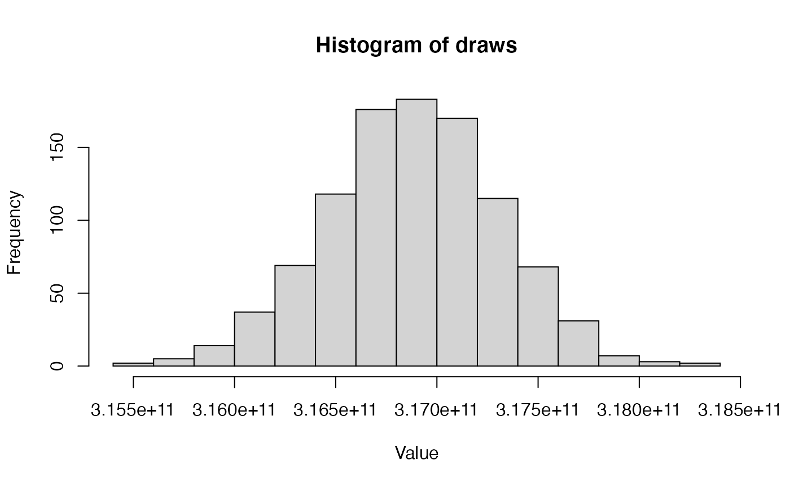

BasicTutorial.RmdCalling external software from R can be a bit tricky, and RevBayes is no exception. In order to successfully use RevBayes in R, you must have RevBayes installed on your computer. You must also know the system path to the RevBayes executeable. For example, on my computer, my RevBayes executeable is called “rb” (this will be the case for Mac and Linux users), and it is stored in my software folder. If you are on Windows, your copy will be called “rb.exe.”
In the above chunk, you will see the command initRev. This is a function in the Revticulate R package. This R package can be installed using the popular devtools R package like so:
devtools::install_github("paleantology/Revticulate")
You’ll likely want to include a block like the below that loads the revticulate library:
The initRev function creates a RevBayes running environment, called “revEnv”, which will allow you to interact with RevBayes through R. initRev takes two arguments: path and useHistory. path is the file path to your RevBayes executable, and useHistory determines whether or not to load the RevBayes history from the last Revticulate session into the RevBayes running environment. Because useHistory defaults to FALSE, and there will be no history for the user’s first session, it is not shown in the example above. Delete my sample path and enter your path above.
The next line, knitRev establishes a KnitR environment to render Rev code in the attractive KnitR format many of us are used to.
RevBayes can be used in a KnitR chunk by changing the header to rb instead of r. In the below chunk, we create an object called example and use the assignment operator to give it the value 1. Then we print it.
example <- 1.0 example
## 1This is not an overtly useful thing to do, however. Let’s erase the previous chunk using the clearRev() function. This removes prior code from the RevBayes environment. Very handy if you make a mistake!
clearRev()
## Successfully reset revEnv!We could, instead, choose to do something a little more useful. How about reading in a data matrix and making a quick starting tree?
morpho <- readDiscreteCharacterData("data/Cinctans.nex") num_taxa <- morpho.size() num_branches <- 2 * num_taxa - 2 taxa <- morpho.names() br_len_lambda ~ dnExp(0.2) phylogeny ~ dnUniformTopologyBranchLength(taxa, branchLengthDistribution=dnExponential(br_len_lambda)) phylogeny
## Successfully read one character matrix from file 'data/Cinctans.nex'
## (((Rozanovicystis_triangularis[&index=26]:0.101533,Undatacinctus_undata[&index=14]:0.064728)[&index=28]:0.208664,(Graciacystis_ambigua[&index=23]:0.039214,Asturicystis_jaekeli[&index=18]:0.017287)[&index=29]:0.662697)[&index=30]:0.554793,(((((Ludwigicinctus_truncatus[&index=22]:0.703672,Lignanicystis_barriosensis[&index=13]:0.078054)[&index=31]:1.068018,Gyrocystis_cruzae[&index=4]:0.261244)[&index=32]:0.111786,((Protocinctus_mansillaensis[&index=8]:0.383000,((Undatacinctus_melendezi[&index=17]:1.376186,Gyrocystis_badulesiensis[&index=5]:1.556860)[&index=33]:0.464923,Sucocystis_bretoni[&index=12]:0.249516)[&index=34]:0.940579)[&index=35]:0.420120,(Gyrocystis_platessa[&index=2]:0.309196,Undatacinctus_quadricornuta[&index=16]:0.192990)[&index=36]:0.210979)[&index=37]:3.619555)[&index=38]:1.757674,(Nelegerocystis_ivantzovi[&index=25]:0.229816,((Sotocinctus_ubaghsi[&index=19]:1.455924,Trochocystites_bohemicus[&index=20]:1.044019)[&index=39]:0.308824,((Elliptocinctus_vizcainoi[&index=10]:0.267752,Sucocystis_acrofera[&index=15]:0.038374)[&index=40]:0.134116,(Gyrocystis_testudiformis[&index=3]:1.152463,Ctenocystis_utahensis[&index=1]:0.297872)[&index=41]:0.168588)[&index=42]:0.462677)[&index=43]:0.873259)[&index=44]:0.066446)[&index=45]:0.032726,((((Elliptocinctus_barrandei[&index=9]:0.676880,(Progyrocystis_disjuncta[&index=7]:0.951117,Sucocystis_theronensis[&index=11]:0.170357)[&index=46]:1.046336)[&index=47]:0.252789,Gyrocystis_erecta[&index=6]:0.094407)[&index=48]:0.162217,Trochocystoides_parvus[&index=21]:0.077909)[&index=49]:0.179993,Davidocinctus_pembrokensis[&index=27]:0.046296)[&index=50]:0.169941)[&index=51]:0.288545,Asturicystis_havliceki[&index=24]:1.116010)[&index=52]:0.000000;Anything entered in an rb block will be interpreted as Rev code, and all the normal Rev syntax will apply. For a nice overview of Rev language and syntax, please see this tutorial.
One thing researchers are often interested in doing is making an object in Rev and then viewing it in R. The best way to accomplish this is with the doRev() function. When using this function, the RevCode you’d like to run goes in the parentheses of the doRev function. These are then exportable to R.
doRev(input = 'morpho <- readDiscreteCharacterData("data/Cinctans.nex"); num_taxa <- morpho.size(); num_branches <- 2 * num_taxa - 2; taxa <- morpho.names(); br_len_lambda ~ dnExp(0.2); phylogeny ~ dnUniformTopologyBranchLength(taxa, branchLengthDistribution=dnExponential(br_len_lambda)); phylogeny')
## [1] "Successfully read one character matrix from file 'data/Cinctans.nex'"
## [2] "((Davidocinctus_pembrokensis[&index=27]:0.024023,(((Protocinctus_mansillaensis[&index=8]:0.257706,Sucocystis_acrofera[&index=15]:0.386602)[&index=28]:0.304464,Graciacystis_ambigua[&index=23]:0.427017)[&index=29]:0.021175,(Elliptocinctus_vizcainoi[&index=10]:0.096404,(((Ludwigicinctus_truncatus[&index=22]:0.045034,Gyrocystis_testudiformis[&index=3]:0.631019)[&index=30]:0.128906,(Undatacinctus_undata[&index=14]:0.027598,Gyrocystis_badulesiensis[&index=5]:0.589473)[&index=31]:0.379641)[&index=32]:0.776270,(Gyrocystis_erecta[&index=6]:0.207262,Asturicystis_jaekeli[&index=18]:0.122179)[&index=33]:0.632390)[&index=34]:0.859852)[&index=35]:0.395741)[&index=36]:0.031790)[&index=37]:0.236058,(((Gyrocystis_cruzae[&index=4]:0.125388,Trochocystoides_parvus[&index=21]:0.237368)[&index=38]:0.260375,(Lignanicystis_barriosensis[&index=13]:0.756595,Undatacinctus_melendezi[&index=17]:1.646149)[&index=39]:0.064405)[&index=40]:0.124140,((Nelegerocystis_ivantzovi[&index=25]:0.900210,(Rozanovicystis_triangularis[&index=26]:0.043082,Sucocystis_bretoni[&index=12]:0.002347)[&index=41]:0.077610)[&index=42]:0.928419,(((Elliptocinctus_barrandei[&index=9]:1.315034,Sucocystis_theronensis[&index=11]:0.226269)[&index=43]:0.045833,(Ctenocystis_utahensis[&index=1]:0.001582,Undatacinctus_quadricornuta[&index=16]:0.112940)[&index=44]:0.064827)[&index=45]:0.492390,(((Progyrocystis_disjuncta[&index=7]:0.061221,Trochocystites_bohemicus[&index=20]:0.477056)[&index=46]:0.072417,Gyrocystis_platessa[&index=2]:0.458169)[&index=47]:0.051358,Sotocinctus_ubaghsi[&index=19]:0.082950)[&index=48]:0.397862)[&index=49]:0.224101)[&index=50]:0.276894)[&index=51]:0.006505,Asturicystis_havliceki[&index=24]:0.121610)[&index=52]:0.000000;"The getRevObj function is then used to extract the object. In this case, a phylogeny is not a simple numeric type, and we use coerce=TRUE to coerce from a string to a Newick tree that can be read by Phytools or similar.
We may choose to clear RevBayes objects out of memory so that they are not being consistently echoed to the screen. In this case, we can either use undoRev() with the flag n=2 to remove just the printed phylogeny, so that it doesn’t clutter up our screen with newick strings, or wwe can do clearRev() to clear out all prior objects.
#undoRev(n = 2) clearRev()
## Successfully reset revEnv!One nice facet of having RevBayes running in an R notebook is the ability to flip to visualizations of the different distributions we use. For example, here is the code for a common parameterization of the discrete Gamma distribution on site rates.
alpha_morpho ~ dnUniform( 0, 1E6 ); rates_morpho := fnDiscretizeGamma( alpha_morpho, alpha_morpho, 4 )
If you aren’t a big stats person, this might not mean much to you, in terms of what this distribution actually looks like. But it is important to develop intuitions for what common distributions look like and what this says about our data. So, we can use R’s built-in graphics capabilities to have a look at what 1000 draws from this gamma will look like.
doRev(' alpha_morpho ~ dnUniform( 0, 1E6 ); rates_morpho := fnDiscretizeGamma( alpha_morpho, alpha_morpho, 4 ) ')
## [1] ""##
## Attaching package: 'ggplot2'## The following object is masked from 'package:Revticulate':
##
## %+%alpha_value <- getRevObj(name = "alpha_morpho", coerce = TRUE) alpha_value
## [1] 562917.3
It’s adviseable if you’re switching gears to a new activity to clear the Rev environment of workspace objects from old activities:
clearRev()
## Successfully reset revEnv!Note that clearRev is an R function, and must be executed in an R chunk.
# The number of coin flips n <- 100 # The number of heads x <- 50 x
## 50We have to start MCMC off with some initial parameter values. One way to do this is to randomly draw values of the parameter (\(p\)) from the prior distribution. We assume a flat beta prior distribution (\(\alpha = 1\) and \(\beta = 1\)).
alpha <- 1 beta <- 1 p <- rbeta (n=1, alpha, beta) [1] p
## 0.06900897We next specify the likelihood function. We use the binomial probability for the likelihood function. Since the likelihood is defined only for \(p\) between 0 and 1, we return 0 if \(p\) is outside this range.
function likelihood(p) {
if(p < 0 || p > 1)
return 0
l<-dbinomial(x,p,n,log=false)
return l
}The function can then be executed in the next cell:
likelihood(p)
## 4.557744e-13The function repRev() can be called in the console (or in non-RStudio versions of R) to use RevBayes directly to program interactively. The repRev() environment is denoted with rb>>>. To exit, type Ctrl + C. It is not compatible with KnitR, being a console tool.
repRev() # rb>>> 1+2 # [1] 3
Revticulate functions use a forced timeout to get output from rb. This may result in seemingly out-of-place timeout warnings. This is because it relies on System2 to run the underlying RevBayes executeable. To run your actual MCMC, it’s probably best to save your code to a script and run it in the terminal.
RevBayes sometimes asks for user input when it is unsure of what to do. For example, if you try to overwrite a previously named function with a new function of the same name, it will ask if the user really wants to do this and will prompt them to answer yes/no. Because of the way Revticulate captures Rev output from the command line, it does not know how to handle this, and will only allow doRev() to output "" from then on. To circumvent this issue, you can clear the Rev environment, or use callRev(). Because callRev() does not access the Revhistory.Rhistory file, it will not cause this issue. However, anything defined in callRev() will not be used in future calls to rb.